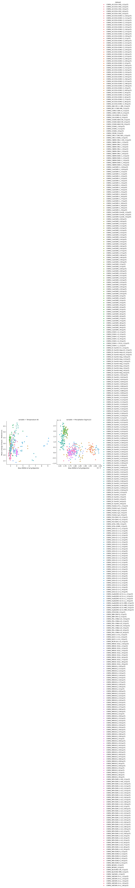

This recipe provides quick insight into the spread and performance of multiple models. Many impact researchers do not have the time and finances to use a large ensemble of climate model runs for their impact analysis. To get an idea of the range of impacts of climate change it also suffices to use a small number of climate model runs. In case a system is only sensitive to annual temperature, one can select a run with a high change and one with a low change of annual temperature, preferably both with a low bias. Results of this recipe can be viewed interactively at https://esmvaltool.dkrz.de/shared/esmvaltool/climate4impact/. Notes: - Bias is calculated with respect to the ERA5 reanalysis dataset over the period 1986-2015. - Future change is calculated for 2035-2065 as compared to 1986-2015. - Area is set to Europe (lon 0-39; lat 30-76.25) - All data are taken from the SSP5-8.5 scenario.
Provide quick insights into the behaviour of each model by plotting the bias with respect to observations and change with respect to the reference period.

main_log.txt | main_log_debug.txt | recipe_impact_cmip6.yml | figures | data